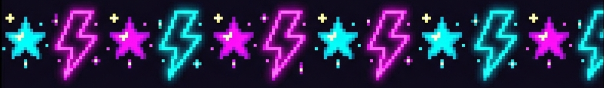

DATABASE ARCHIVES: LORE
Accessing historical records... AUTHORIZED

Founded by Richard Night in 1994, Night City was originally envisioned as a corporate utopia free from oppressive government regulations. After Night's assassination, the city fell into the hands of organized crime before corporations like Arasaka stepped in to establish their own brutal order.
The true rulers of Night City. Megacorporations like Arasaka and Militech control the economy, private security forces, and political landscape. Their battles often spill into the streets, affecting all citizens.
Vast territories are controlled by local gangs. The Maelstrom modify their bodies to extremes, the Valentinos run Heywood through deep-rooted loyalty, and the Voodoo Boys dominate the net from their stronghold in Pacifica.
Chrome is everything. From neural ports to mantis blades, cybernetic enhancements dictate your capability and survival. Those who augment too much risk suffering from cyberpsychosis.